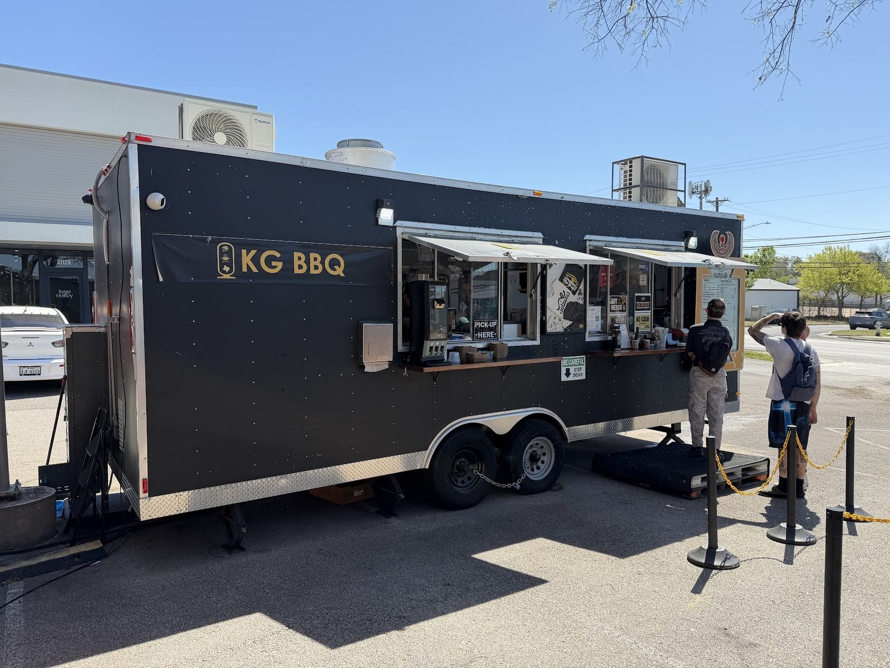

Za'atar pomegranate ribs
Pork ribs with a za'atar and pomegranate glaze.
Za'atar pomegranate ribs, lamb chops and brisket, smoked by Kareem, the Egyptian Cowboy.

Start here
Three plates to try first.
Pork ribs with a za'atar and pomegranate glaze.

Smoked lamb chops.

Brisket over rice with many flavors blended together, topped with herbs and pomegranate.

Smoked daily


4.6 ★ · 1727 Google reviews
KG BBQ is doing something special by bringing unique flavors and seasonings to Texas BBQ. The brisket was very good, although I’ve had a few other local Austin BBQ spots that I personally prefer. However, the Za’atar and pomegranate glazed pork ribs were absolutely stunning! The combination of herbs, seasoning, and pomegranate glaze elevated the juicy, tender ribs to another level.
Kareem is doing great things in the bbq world. We're grateful he is here in Austin making delicious food. Stopped in for some bbq to go, there was a short wait but,most importantly, nothing was sold out. We tried the brisket rice bowl, za'atar and pomegranate glazed pork ribs, the buttermilk potato salad, and baladi salad. I loved it all. The flavor on the ribs was my highlight, I can't describe how good it was.
This is a (kind of hidden) gem BBQ place in Austin. The food is incredibly delicious! We tried the Rack of Lamb, the Brisket, the glazed Pork Ribs and it was so fantastic we went back for seconds and added Chicken along with more Lamb and Pork. The meat was flavorful and tender - the pork was literally falling off the bone as we picked it. The Mac and Cheese were ok, and will try the rice next time.
Meet the crew
Kareem El-Ghayesh, known as KG, left corporate finance in Cairo for Austin in 2016 to follow his passion for barbecue.
He finished culinary school, learned from Austin pitmasters, and now brings Egyptian and Middle Eastern flavors to Texas barbecue.
Shaded seating with fans, more seats and drinks at the brewery next door, and brisket classes when they run.